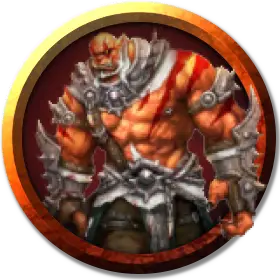

Орк исчадие
Fiendish Orc
Среднее Исчадие, хаотично-злое

Класс Доспеха 16 (кольчуга)
Хиты 93 (11к8 + 44)
Скорость 30 футов
| мод | спас | ||
|---|---|---|---|
| СИЛ | 18 | +4 | +6 |
| ЛОВ | 12 | +1 | +1 |
| ТЕЛ | 18 | +4 | +6 |
| мод | спас | ||
|---|---|---|---|
| ИНТ | 11 | +0 | +0 |
| МДР | 11 | +0 | +2 |
| ХАР | 16 | +3 | +3 |
Навыки Запугивание +5
Иммунитет к урону огонь, яд
Чувства тёмное зрение 60 футов, пассивное Восприятие 10
Языки Общий, Бездны, Орочий
Опасность 4 (1100 опыта)
Бонус мастерства +2
Особенности
Агрессивный. Орк может бонусным действием переместиться на расстояние, не превышающее его скорость, в сторону видимого враждебного существа.
Ярость Груумша. Орк причиняет дополнительный урон 4 (1к8), когда попадает атакой оружием (уже учтено в атаках).
Действия
Мультиатака. Орк совершает две атаки секирой или копьем.
Секира. Рукопашная атака оружием: +6 к попаданию, досягаемость 5 футов, одна цель. Попадание: Рубящий урон 15 (1к12 + 4 плюс 1к8).
Копье. Рукопашная или дальнобойная атака оружием: +6 к попаданию, досягаемость 5 футов или дистанция 20/60 футов, одна цель. Попадание: Колющий урон 12 (1к6 + 4 плюс 1к8), или колющий урон 13 (2к8 + 4), если используется двумя руками для совершения рукопашной атаки.
Боевой клич (1/день). Все существа на выбор орка в пределах 30 футов, слышащие его, и пока не находящиеся под действием Боевого клича, до начала следующего хода орка совершают броски атаки с преимуществом. После этого орк может бонусным действием совершить одну атаку.